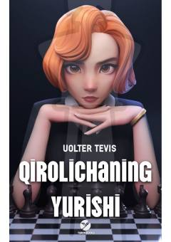

QYYetim qizaloq Elizabetning shaxmat olamidagi murakkab va zafarli yo'li haqidagi ajoyib roman.
Uolter Tevisning ushbu romani ota-onasidan erta ajralib, yetimxonada o'sgan iqtidorli qizaloq Elizabet Harmonning hayoti va uning shaxmat olamidagi muvaffaqiyatlari haqida hikoya qiladi. Yetimxonadagi qiyinchiliklar va ruhan ezilishlarga qaramay, u shaxmat o'yiniga bo'lgan mehri va metin irodasi tufayli yuksak cho'qqilarni zabt etadi. Asar o'quvchini qat'iyatlilikka va maqsad sari dadil qadam tashlashga undaydi.